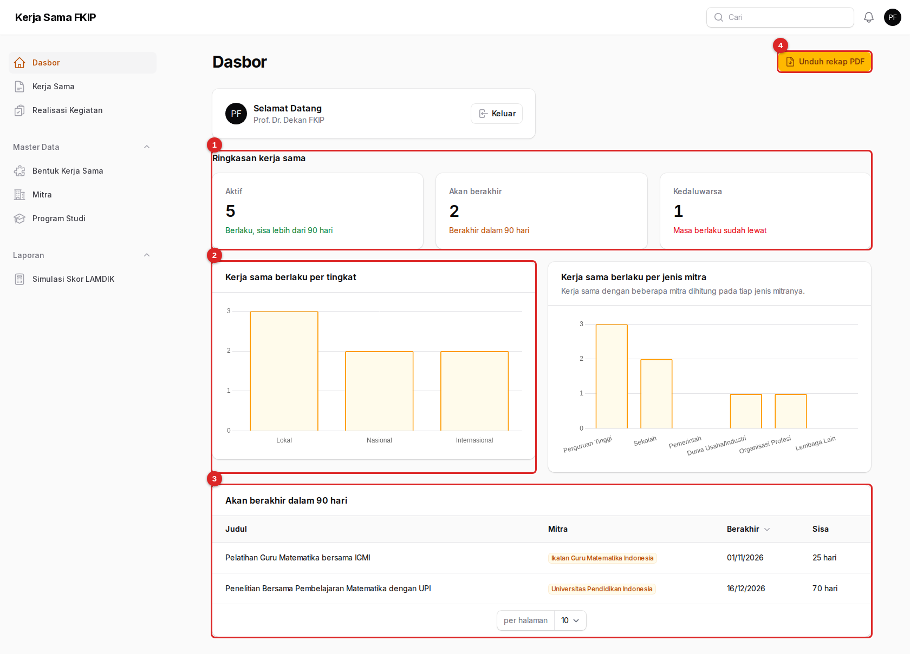
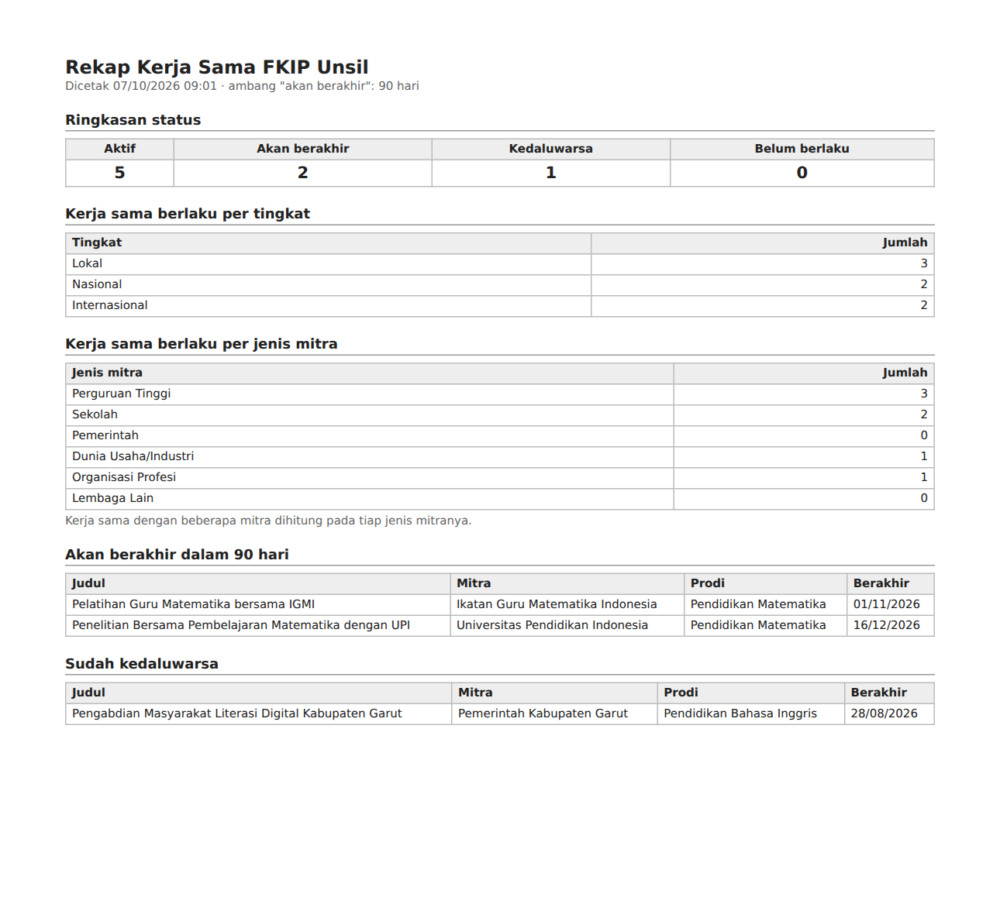
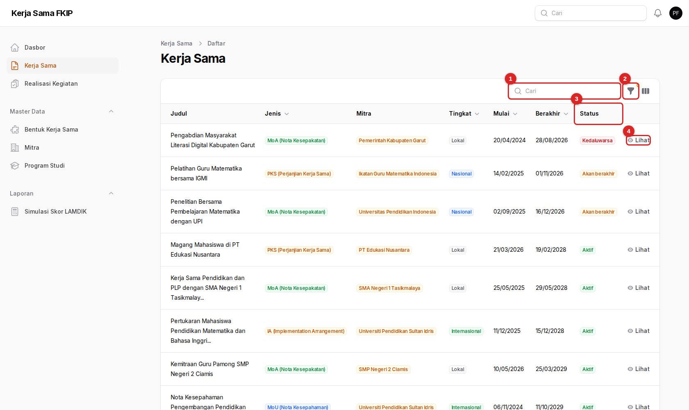
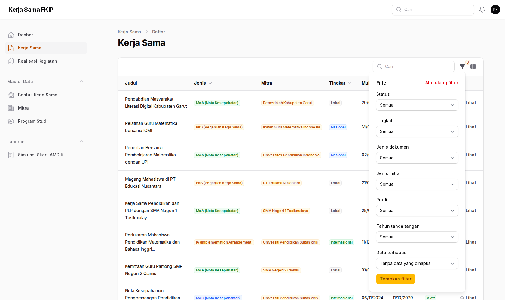
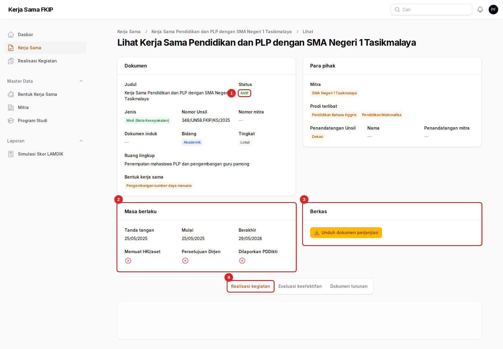
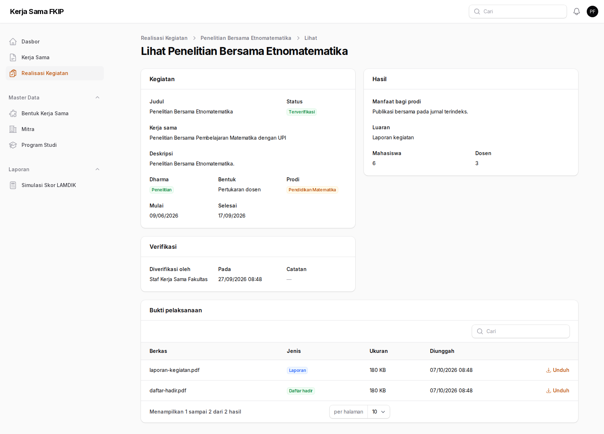
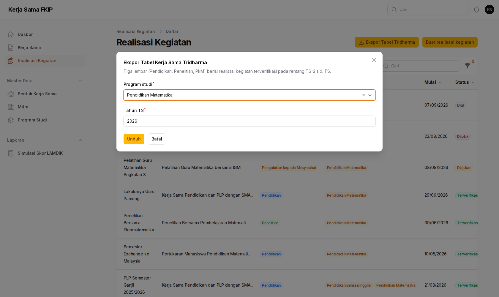
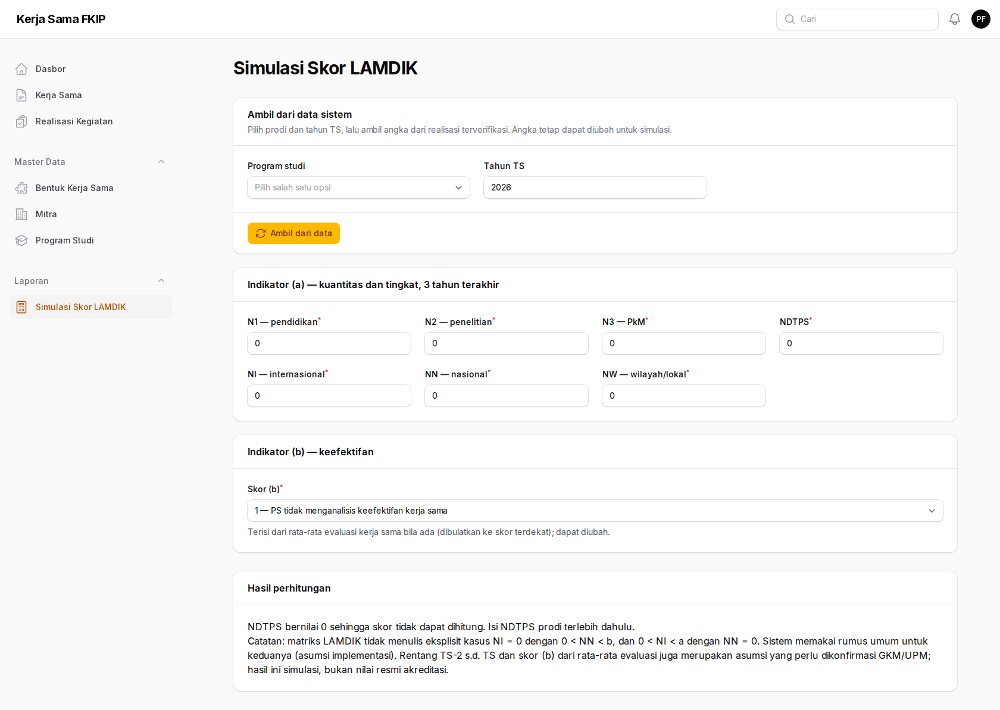

Panduan Pimpinan
Untuk dekan, wakil dekan, dan kaprodi: membaca kondisi kerja sama fakultas, membuka dokumen, dan mengunduh rekap untuk pengambilan keputusan. Peran ini hanya membaca.
01Peran Anda
Anda melihat gambaran lengkap tanpa risiko mengubah data secara tidak sengaja.
Yang dapat Anda lakukan
- Membuka dasbor, grafik, dan daftar dokumen yang akan berakhir
- Mencari dan menyaring seluruh dokumen kerja sama
- Membuka rincian dokumen dan mengunduh naskah PDF
- Melihat realisasi kegiatan dan mengunduh buktinya
- Mengunduh rekap PDF dan ekspor Tabel Tridharma
- Mencoba Simulasi Skor LAMDIK
Yang tidak dapat Anda lakukan
- Membuat, mengubah, atau menghapus dokumen
- Mencatat atau memverifikasi realisasi kegiatan
- Mengelola mitra, prodi, dan bentuk kerja sama
02Membaca dasbor
Halaman pertama setelah masuk. Cukup satu layar untuk mengetahui apakah ada yang perlu ditindaklanjuti.

- Ringkasan kerja sama — jumlah dokumen Aktif, Akan berakhir (sisa 90 hari atau kurang), dan Kedaluwarsa.
- Grafik — kerja sama yang sedang berlaku menurut tingkat (lokal, nasional, internasional) dan, di sebelahnya, menurut jenis mitra.
- Akan berakhir dalam 90 hari — tabel dokumen yang perlu segera diperpanjang, urut dari yang paling dekat berakhir, lengkap dengan kolom Sisa hari. Klik judul untuk membuka dokumennya.
- Unduh rekap PDF — tombol rekap untuk rapat atau laporan (lihat bab berikutnya).
Grafik menghitung dokumen yang sedang berlaku (aktif ditambah akan berakhir). Dokumen yang melibatkan beberapa mitra dihitung pada jenis tiap mitranya, sehingga jumlah batang pada grafik jenis mitra bisa lebih besar daripada jumlah dokumen.
Angka Akan berakhir yang tidak nol adalah isyarat untuk menanyakan rencana perpanjangan kepada Admin Fakultas atau Admin Prodi terkait. Sistem belum memiliki tombol “perpanjang”; perpanjangan dicatat sebagai dokumen baru.
03Mengunduh rekap PDF
Satu klik menghasilkan ringkasan untuk dibawa ke rapat.
- Buka Dasbor.
- Tekan Unduh rekap PDF di kanan atas.
- Berkas
rekap-kerja-sama-TAHUN-BULAN-TANGGAL.pdfterunduh. Tanggal pada nama berkas adalah tanggal Anda mengunduhnya.

Rekap mencerminkan data pada saat diunduh. Cantumkan tanggal cetak (tertera di bagian atas rekap) bila Anda menyalinnya ke laporan.
04Mencari dokumen kerja sama
Menu Kerja Sama memuat seluruh dokumen fakultas.

- Cari — mencari berdasarkan judul dokumen.
- Filter — membuka panel penyaring.
- Status — lencana berwarna sesuai status (hijau aktif, kuning akan berakhir, merah kedaluwarsa).
- Lihat — membuka rincian dokumen.

Filter yang tersedia: Status, Tingkat, Jenis dokumen (MoU/MoA/PKS/IA), Jenis mitra, Prodi, dan Tahun tanda tangan. Klik judul kolom Jenis, Tingkat, Mulai, atau Berakhir untuk mengurutkan.
Contoh: untuk melihat semua kerja sama internasional yang segera berakhir, pilih Tingkat = Internasional dan Status = Akan berakhir.
05Membuka rincian dokumen
Semua yang tercatat tentang satu dokumen ada di satu halaman.

- Status dokumen saat ini.
- Masa berlaku — tanggal tanda tangan, mulai, dan berakhir, serta penanda HKI/aset, persetujuan Dirjen, dan pelaporan PDDikti.
- Berkas — tombol Unduh dokumen perjanjian untuk naskah PDF (dan versi bahasa asing bila ada).
- Tab di bawah — Realisasi kegiatan, Evaluasi keefektifan, dan Dokumen turunan (dokumen yang bernaung di bawah dokumen ini).
Bagian Dokumen memuat judul, jenis, nomor, bidang, tingkat, ruang lingkup, dan bentuk kerja sama. Bagian Para pihak memuat mitra, prodi yang terlibat, dan penandatangan.
Naskah diunduh lewat tautan yang berotorisasi: hanya pengguna yang sudah masuk yang dapat membukanya. Jangan meneruskan berkas ke pihak yang tidak berkepentingan.
06Melihat realisasi kegiatan
Menu Realisasi Kegiatan menunjukkan apa yang sudah benar-benar dikerjakan dari tiap perjanjian.

Hanya realisasi berstatus Terverifikasi yang dihitung dalam data akreditasi. Status lain berarti masih diproses atau dikembalikan.
07Mengekspor Tabel Tridharma
Data siap pakai untuk akreditasi LAMDIK IAPSK 3.0.
- Buka Realisasi Kegiatan.
- Tekan Ekspor Tabel Tridharma.
- Pilih Program studi dan Tahun TS, lalu tekan Unduh.

Kolom isian: lembaga mitra, tingkat, judul kegiatan, manfaat bagi prodi, waktu dan durasi, bukti kerja sama, dan tahun berakhir.
08Simulasi skor LAMDIK
Perkiraan skor elemen Kerja Sama Tridharma untuk perencanaan, bukan nilai resmi.

- Pilih Program studi dan Tahun TS, lalu tekan Ambil dari data untuk mengisi angka dari realisasi terverifikasi.
- Ubah angka (N1, N2, N3, NDTPS, NI, NN, NW) atau skor (b) secara bebas untuk mencoba skenario.
- Baca hasil pada kartu Hasil perhitungan.
Hasil adalah simulasi. Rentang TS-2 sampai TS dan skor (b) dari rata-rata evaluasi merupakan asumsi yang perlu dikonfirmasi GKM/UPM; jangan dikutip sebagai nilai akreditasi.
09Bantuan
Saya tidak menerima pengingat jatuh tempo
Pengingat hanya dikirim kepada pimpinan/kaprodi yang akunnya terhubung ke prodi yang terlibat dalam dokumen. Bila akun Anda (misalnya dekan) tidak terhubung ke prodi, andalkan tabel Akan berakhir di dasbor.
Saya menemukan data yang keliru
Anda tidak dapat mengubah data. Catat judul dokumennya dan sampaikan kepada Admin Fakultas atau Admin Prodi terkait.
Angka di dasbor berbeda dengan rekap lama
Status dihitung dari tanggal pada hari ini, jadi angka bergeser setiap hari seiring dokumen mendekati atau melewati tanggal berakhir.
Dasar-dasar penggunaan (masuk, notifikasi, istilah) ada di beranda panduan.